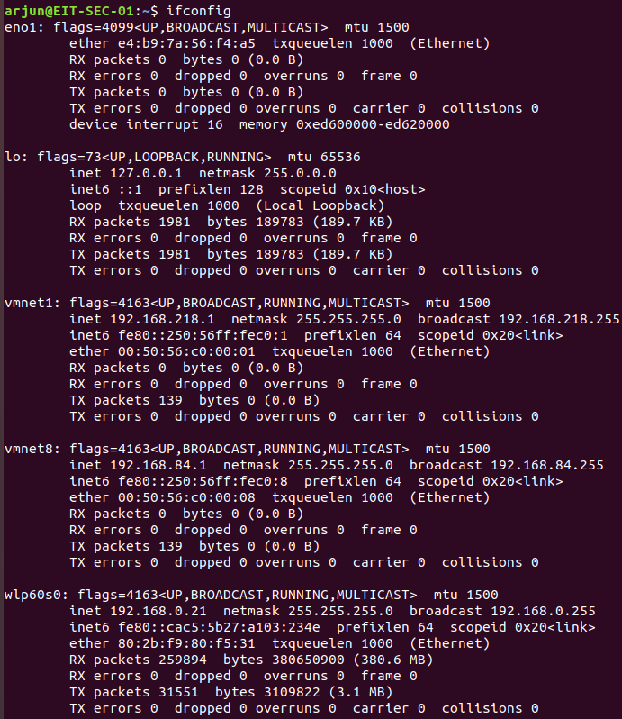

ifconfig - shows you network information for each interface (alternatively use ip a)

iwconfig - shows wireless information for wireless interfaces

ping [address] (pings the specified address, by sending ICMP data to it)

arp -a (shows the mac addresses associated with an ip address)

netstat -ano (shows active connections running on the machine, and what ports they are running on)

route (shows where your traffic enters and exits)